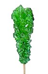

nucleation

Definition: In thermodynamics, nucleation is the first step in the formation of either a new thermodynamic phase or structure via self-assembly or self-organization within a substance or mixture. Nucleation is typically defined to be the process that determines how long an observer has to wait before the new phase or self-organized structure appears. For example, if a volume of water is cooled (at atmospheric pressure) below 0 °C, it will tend to freeze into ice, but volumes of water cooled only a few degrees below 0 °C often stay completely free of ice for long periods (supercooling). At these conditions, nucleation of ice is either slow or does not occur at all. However, at lower temperatures nucleation is fast, and ice crystals appear after little or no delay.
Source: Wikipedia
Wikipedia Page (Something wrong with this association? Let us know.)
Wikidata Page (Something wrong with this association? Let us know.)